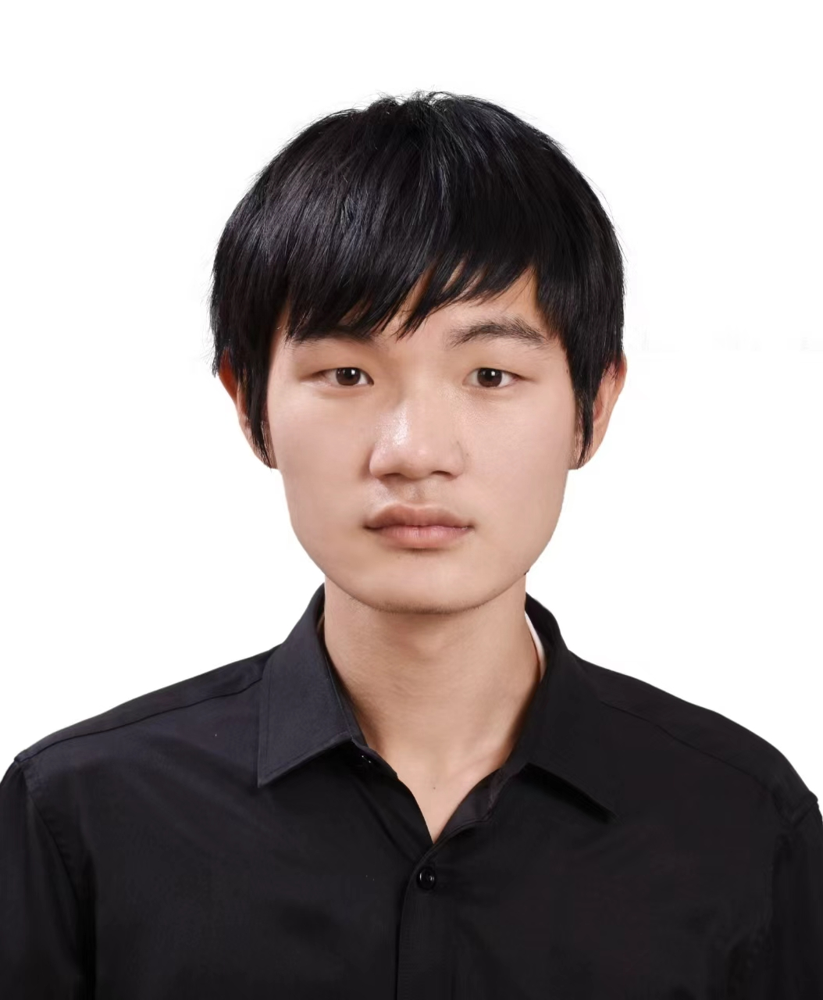
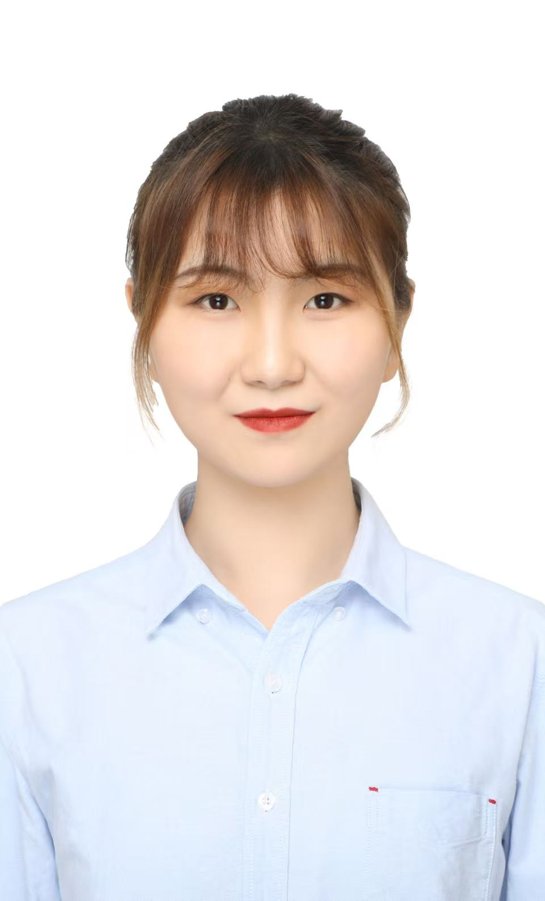
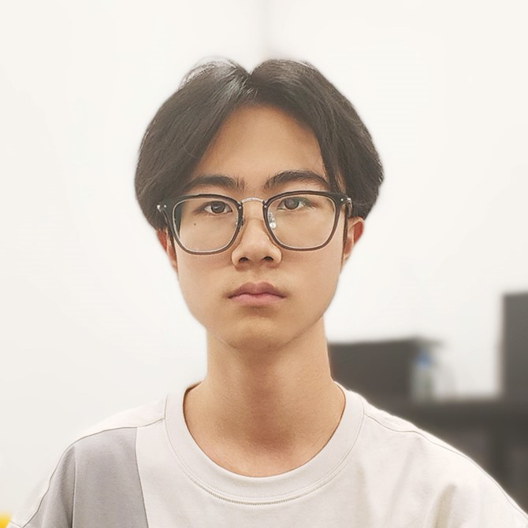
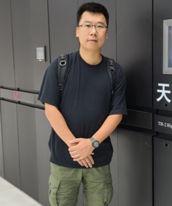

Introduction
Multimodal large language models (MLLMs) are revolutionizing image quality assessment (IQA) by bringing semantic understanding and world knowledge into evaluation. Yet nearly all existing IQA benchmarks ignore scientific imagery, a cornerstone of research, education, and discovery.
Unlike general photos, where quality is judged by blur or noise, scientific images must also be correct, complete, clear, and conventional. A high-quality scientific visualization must: accurately reflect scientific facts (Validity); include all necessary labels, scales, and context (Completeness); be instantly interpretable by experts (Clarity); and follow field-specific norms in style and notation (Conformity).
To address this gap, the SIQA Challenge introduces two tracks (SIQA-U & SIQA-S) that push models beyond pixels—to evaluate scientific integrity through visual reasoning and domain-aware judgment.

Challenge Tracks
The SIQA Challenge consists of two independent tracks. Participants can choose any one or both to compete in. Each track will have its own set of awards.

| Model | Perception SRCC | Perception PLCC | Knowledge SRCC | Knowledge PLCC | Mean SRCC | Mean PLCC |
|---|---|---|---|---|---|---|
| NIQE (zero-shot) | 0.345 | 0.235 | 0.447 | 0.410 | 0.396 | 0.322 |
| Q-Align (Zero-shot) | 0.749 | 0.762 | 0.285 | 0.400 | 0.517 | 0.581 |
| CLIP-IQA (Zero-shot) | 0.496 | 0.520 | 0.362 | 0.435 | 0.429 | 0.478 |
| CLIP-IQA+ (Trained) | 0.724 | 0.676 | 0.862 | 0.801 | 0.793 | 0.741 |
| HyperIQA (Trained) | 0.773 | 0.783 | 0.897 | 0.895 | 0.835 | 0.839 |
| InternVL3.5 (Fine-tuned) | 0.857 | 0.881 | 0.915 | 0.937 | 0.886 | 0.909 |
Note: While MLLMs are not mandatory for this challenge, baseline experiments across diverse architectures show that fine-tuned MLLMs achieve superior performance on SIQA-S.
🔍 Challenge Track Details
Track 1: SIQA Understanding (SIQA-U)
Evaluates a model’s ability to reason about scientific image quality through structured visual question answering aligned with the four SIQA dimensions.
Question Types:
- Yes/No: Binary verification of factual, structural, or representational conditions.
- What: Multiple-choice comprehension of scientific entities, relationships, or context.
- How: Quality judgment on completeness, clarity, and disciplinary conventions.
Measures factual verification, semantic understanding, and scientific reasoning.
Evaluation Metric:
Final Score₁ = 0.2 × ACCyes/no + 0.3 × ACCwhat + 0.5 × ACChow
Track 2: SIQA Scoring (SIQA-S)
Predicts continuous quality scores along two complementary dimensions:
- Knowledge-Driven: Factual correctness (validity + completeness) — does the image convey accurate science?
- Perception-Driven: Human-expert judgments on clarity and discipline-specific usability (clarity + conformity).
Models predict scores directly from images—no text input required.
Evaluation Metric:
For each dimension d ∈ {Factual, Perceptual}:
Score(d) = max( (SRCC(d) + PLCC(d)) / 2 , 0 ) × 100
Final Score₂ = (ScoreFactual + ScorePerceptual) / 2
The SIQA dataset is built around two complementary tracks: SIQA-U for structured reasoning and SIQA-S for continuous quality scoring. To help participants better understand the challenge design and data structure, we provide a visual overview of the dataset below.

Timeline
Organizers
Shanghai Artificial Intelligence Laboratory

Shanghai Artificial Intelligence Laboratory

Shanghai Artificial Intelligence Laboratory
Shanghai Artificial Intelligence Laboratory
Shanghai Artificial Intelligence Laboratory
Shanghai Artificial Intelligence Laboratory

Shanghai Artificial Intelligence Laboratory
In partnership with universities and open-data initiatives worldwide.
Advisory Committee
Shanghai Artificial Intelligence Laboratory
Shanghai Artificial Intelligence Laboratory
Shanghai Artificial Intelligence Laboratory
Cardiff University
Shanghai Jiao Tong University
Shanghai Jiao Tong University

Shanghai Artificial Intelligence Laboratory
* means the project lead